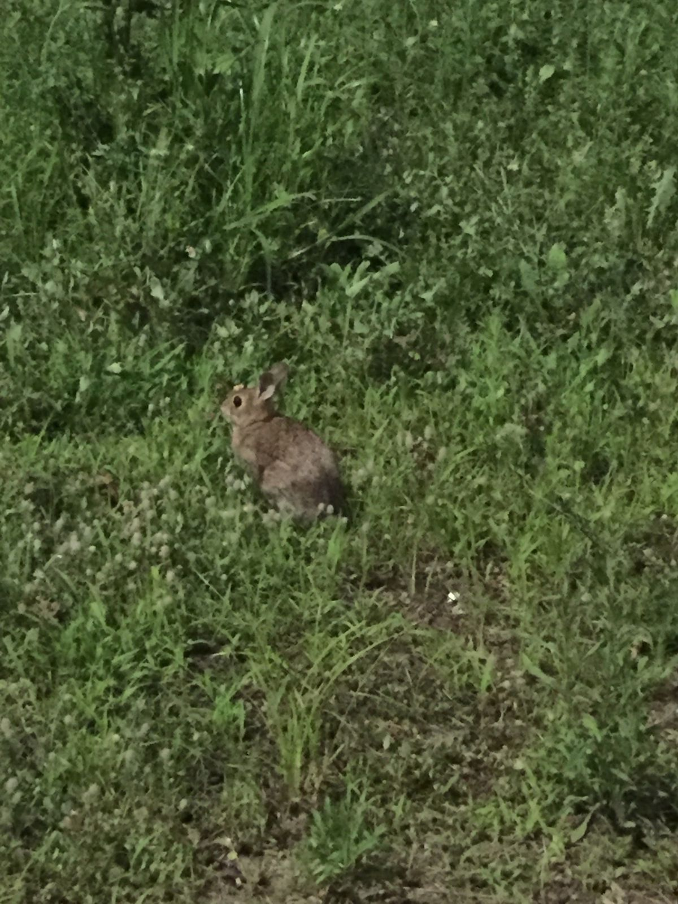
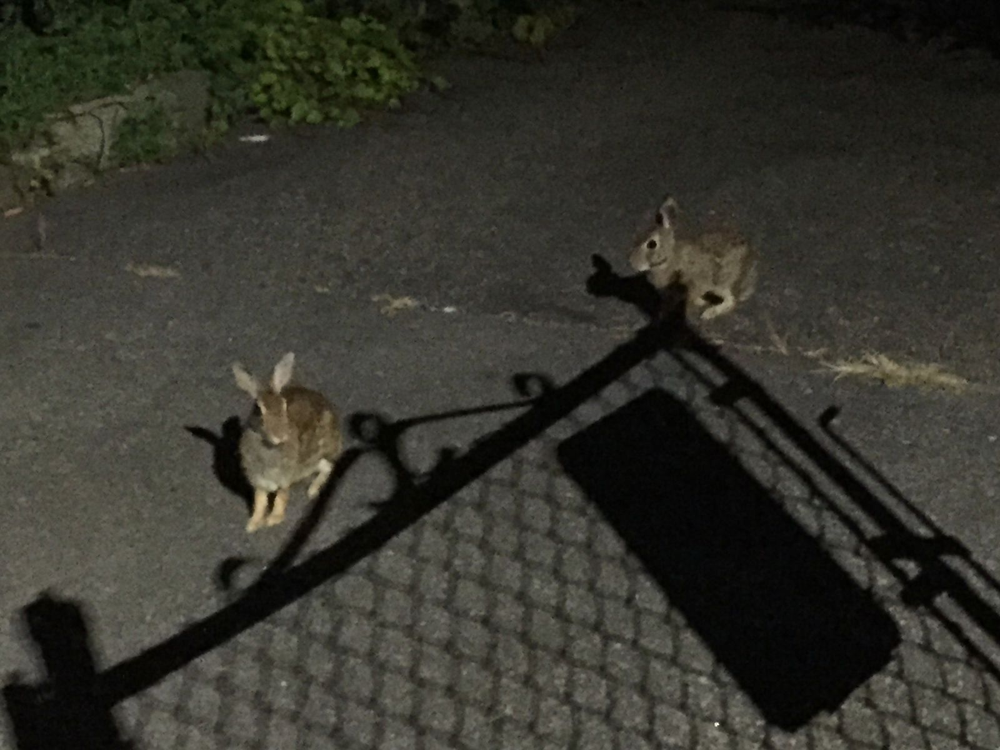

Bun Alert System
Yesterday was a remarkable day. In addition to staying late at work and talking with coworkers reminiscent of years past, I saw three buns during my walk home. The first I encountered a couple blocks from the office, just before 11pm. It was chilling outside the community garden nearby, probably looking for a good snack. The second and third buns were spotted together, maybe five minutes later, sitting in a driveway. A passing pedestrian noted that they had been there a half hour before, when he walked by in the other direction. They seemed rather fearless, unafraid to let me get closer for a better picture.
In lieu of a legitimate bun alert system, one of my friends and I simply text each other when we encounter buns. What makes bun alerts so wonderful? When I see a bun, I get extremely happy inside. They are magnificently adorable creatures who have learned to survive in the city and coexist with people. When I receive a bun alert, I assume that the sender is feeling just as elated as I do when I spot a bun, and it's good to know that there exists such simple, raw joy in the world.

